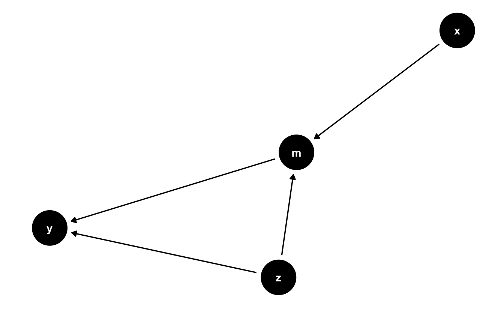
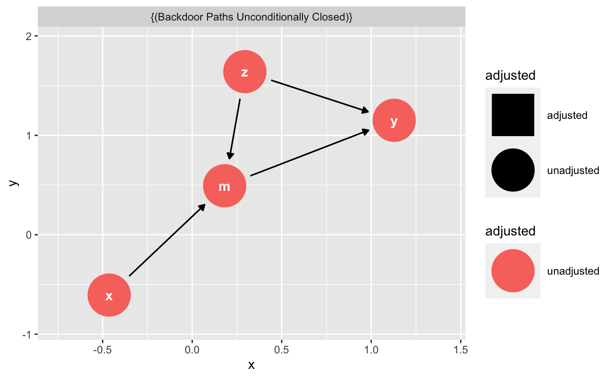

library(dagitty)
library(ggdag)
library(ggplot2)kausal28
dag
causal
Exercise
Gegeben sei der DAG (Graph) g (s. u.). Der DAG verfügt über mehrere Variablen, die als Knoten im Graph dargestellt sind.
g <-
dagify(
y ~ z + m,
m ~ x + z,
exposure = "x",
outcome = "y"
)Hier ist die Definition des DAGs:
dag {
m
x [exposure]
y [outcome]
z
m -> y
x -> m
z -> m
z -> y
}Und so sieht er aus:
ggdag(g) + theme_dag_blank()
Welche minimale Variablenmenge muss kontrolliert werden, um den kausalen Effekt von der UV zur AV zu identifizieren?
UV: x
AV: y
Hinweise:
- Mengen sind mittels geschweifter Klammern gekennzeichnet, z.B.
{x8, x9}meint die Menge mit den zwei Elementenx8undx9. - Die leere Menge
{ }bedeutet, dass keine Variable kontrolliert werden muss, um den kausalen Effekt zu identifizieren. - Alle Variablen werden als gemessen vorausgesetzt.
- Es ist möglich, dass es keine Lösung gibt, dass es also keine Adjustierungsmenge gibt, um den kausalen Effekt zu identifizieren. Wenn dies der Fall sein sollte, wählen Sie “keine Lösung”.
Answerlist
- {m}
- {z}
- {m, z}
- { }
- keine Lösung
Solution
Folgende minimale Variablenmenge muss kontrolliert werden, um den kausalen Effekt der UV auf die AV zu identifizieren: leere Menge.
z muss nicht kontrolliert werden, da der Pfad x->my<-z->y wegen des Colliders bereits geschlossen ist. Es bleibt nur ein Pfad über und der ist kausal: x->m->y.

Erläuterung:
UV und AV sind (durch mindestens einen offenen Pfad) verbunden (“d-connected”).
Folgende Unabhängigkeitsbeziehungen (_||_) werden durch den DAG definiert:
x _||_ y | m, z
x _||_ zUV und AV werden durch folgende Pfade verbunden:
$paths
[1] "x -> m -> y" "x -> m <- z -> y"
$open
[1] TRUE FALSEOffenen Pfade sind der/die Pfad/e, die in der obigen Ausgabe unter $open mit TRUE gekennzeichnet sind.
Answerlist
- Falsch
- Falsch
- Falsch
- Richtig
- Falsch
Categories:
- dag
- causal